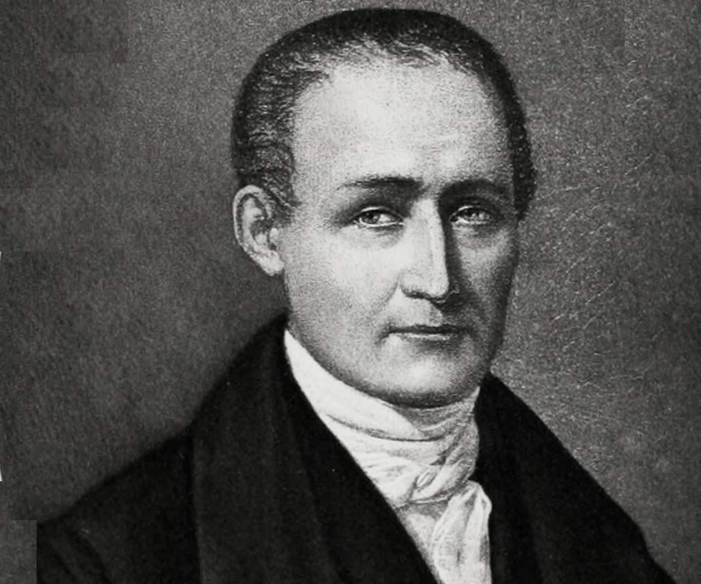

Podemos dizer que a definição técnica da fotografia é a captura de imagens por meio de exposição luminosa em uma superfície fotossensível. O primeiro registro que se tem conhecimento na história da fotografia é de Joseph Nicéphore Niépce, francês que capturou a primeira imagem no ano de 1826. Soma-se a isso o processo de evolução que ocorreu nos anos seguintes para que fosse possível criar fotos como nós conhecemos hoje em dia. A história diz que cientistas nos campos de química e física tiveram papéis muito importantes para o desenvolvimento da fotografia. Além do francês Joseph Nicéphore Niépce, outros nomes foram fundamentais no começo da história da fotografia, como Louis Jacques Mandé Daguerre, Hércules Florence, George Eastman, William Fox Talbot e Boris Kossoy.
Com o passar dos anos, no entanto, a essência da arte de fotografar não mudou muita coisa. Claro que, como todas as áreas, a fotografia sofreu mudanças devido, principalmente, aos avanços da tecnologia que presenciamos na era moderna. Isso fez, por exemplo, que as fotos tenham uma resolução maior, uma maior realidade de cores, além da sua qualidade final. Mas, deve-se ressaltar que os pioneiros na fotografia sempre buscaram que esta fosse uma forma de expressão acessível para todos, por isso, no começo da atividade e das impressões das fotos, os profissionais da área buscavam por materiais que eram mais duráveis e que tinham um custo mais baixo, além de acelerar o processo de revelação da foto.
Com a chegada da fotografia digital, muitos conceitos acabaram sendo alterados. Por exemplo, hoje as máquinas fotográficas estão cada vez menores e mais fáceis de manipular, sem perder, no entanto, a qualidade da fotografia. Voltando um pouco no tempo, porém, o desenvolvimento da foto colorida foi um processo difícil antes de ser bem sucedido. A primeira foto colorida saiu em 1907, mas, especialistas dizem que até hoje a escala de tons preto e branco ainda possui uma qualidade muito maior. De volta aos dias de hoje, o advento da internet foi um grande facilitador para as fotos, principalmente para o seu fluxo e para a sua popularização, já que, hoje, qualquer pessoa com um celular ou máquina simples pode tirar uma foto. Porém, nem sempre com a mesma qualidade de um profissional, tanto técnica quanto em qualidade.
